Blender · Multimedia 12 · Sprint 8 · Lessons 1–10 · animation and virtual production, part 3
INTO THE WORLD.
Design a world in Blender, track a real camera, key a green screen, and put a filmed person — then yourself — into a place that does not exist.
18 illustrated stagesTen lessonsScenario: one-person VFX studioWorld building · camera tracking · keying · grounding · light match
The demo shot, made in Blender with this guide’s steps. Practice plate: Hollywood Camera Work. Models: Video Copilot Star Pack and Sketchfab.
World. Plate. Integrate.
Three stages, the way solo VFX artists work. First on a professional practice plate, then on footage you shoot yourself.
My supports
Turn on any help you want. Your teacher may have set some for you. They change how the guide helps, not what is assessed.
Studio brief
One shot. A place that does not exist.
A client wants a 10–15 second shot of a person in a world of your design. You will build the world, learn the process on a professional practice plate, then shoot yourself on the green screen and put yourself there. Then the client changes the brief.
You will hand in
World design sheet and World_YourName.blend
Practice shot: tracked (under 1 px), keyed, grounded
Your own shot, with the client change, as an MP4
Credits and a three-sentence explanation
Footage and credits
The practice plate is from Hollywood Camera Work. You may use it and post your results with credit, but do not re-upload the plate itself. Download it from their site (link in Sources).
Film and TV now build worlds in 3D and put actors into them, on LED stages or with green screen. Matchmove artists track cameras, compositors key and integrate, environment artists build the worlds. Solo creators like Drifting Walnut and Ian Hubert do all three jobs themselves in Blender.
The three stages you learn here (World, Plate, Integrate) are the same ones a studio pipeline uses, and the same checks apply: solve error, clean matte, contact and matched light.
Knowledge first
Why a composite looks real (or fake).
Parallax and camera tracking
When a camera moves, near points shift more than far points. Tracking markers at different depths let Blender calculate the camera’s path. The solve error (in pixels) tells you how well it worked: under 1 is the target.
Keying and mattes
A keyer turns one colour transparent. The matte is the black-and-white map of what stays. A garbage matte removes things the keyer cannot know are unwanted.
Scale and grounding
A filmed person is a fixed size, so the world must be in real metres. Feet must meet the ground on every frame; if the person moves nearer or further, the footage must move in depth with them.
Light and colour match
Light direction, shadow direction, brightness and colour temperature must agree between the person and the world. Decide the light before you shoot.
Design principles in the shot
Emphasis: the person is the sharpest, most detailed thing. Depth: haze and overlapping shapes. Balance: person and largest prop on opposite thirds. Unity: one light colour across everything.
What this assesses
Skills you will show.
Skill (sprint skill ID)
Where you show it
Navigate and transform in Blender · BL-NAV-01 · BL-TRN-01
Steps 3–4 (world at real scale)
Lighting · BL-LGT-01 · Match light and colour · PS-LGT-02
Virtual production craft (tracking, keying, grounding, integration)
Practice shot (steps 7–12) and your own shot (13–16)
Primary achievement evidence: the client’s change (step 17) and the final screening. Guided steps on the practice plate and supports are recorded separately from achievement. Sprint mm12-26-s08. The registry has no virtual-production skill IDs yet; see the animation skills proposal.
Session A · Lesson 1 · mm12-26-s08-d01
Study the pros. Design your world.
You run a one-person VFX studio. The job: put a real person into a world that does not exist, and make an audience believe it.
TODAYStudy two pro breakdowns (30 min), design your world (35 min).
01
See how the pros do it, and read the brief
Start here: read or listen to the theory deck (about 10 minutes, with checkpoint questions), then come back.
IN SHORTWatch the demo; watch two breakdowns; list the stages; match to World, Plate, Integrate.
READ ALOUD
DOCUMENT: This guide · two breakdown videos SELECT: The three stages of a VFX shot TOOLS / ROUTE: Watch · note-take
Play the demo shot (below). It was made in Blender with exactly the steps in this guide.
Watch Drifting Walnut’s step-by-step process and one episode of “Put Yourself in Any CGI Environment”. Pause and list his stages.
Watch the first three minutes of Ian Hubert’s green-screen tricks. Note the problem he describes when a person walks away from the camera.
Match what you saw to the three stages here: World, Plate, Integrate.
Write down the two things that most made their shots believable.
Stage 1 · World
Design and build a place worth visiting. Light it.
Stage 2 · Plate
Track the camera. Key the green screen.
Stage 3 · Integrate
Ground the person, match light and colour, render.
The demo shot (real Blender render). Plate: Hollywood Camera Work.
DOCUMENT: Blender 5.2 · World_YourName.blend (or the starter world) SELECT: Ground mesh, World, sun lights TOOLS / ROUTE: Mesh › Grid · Proportional Edit or Displace · World › Sky Texture · Sun
Start a file World_YourName.blend, or open Desert_Starter_World.blend from the brief and change it.
Make the ground a large grid. Keep the area where the person will stand flat (Z = 0) and raise hills further away.
World properties › Color › Sky Texture. Set the sun elevation and rotation to match your storyboard.
Add a Sun light in the same direction as the sky’s sun so shadows match.
Add distant shapes (mesas, hills, buildings) to give the horizon a silhouette.
Click by click (real Blender screenshots)
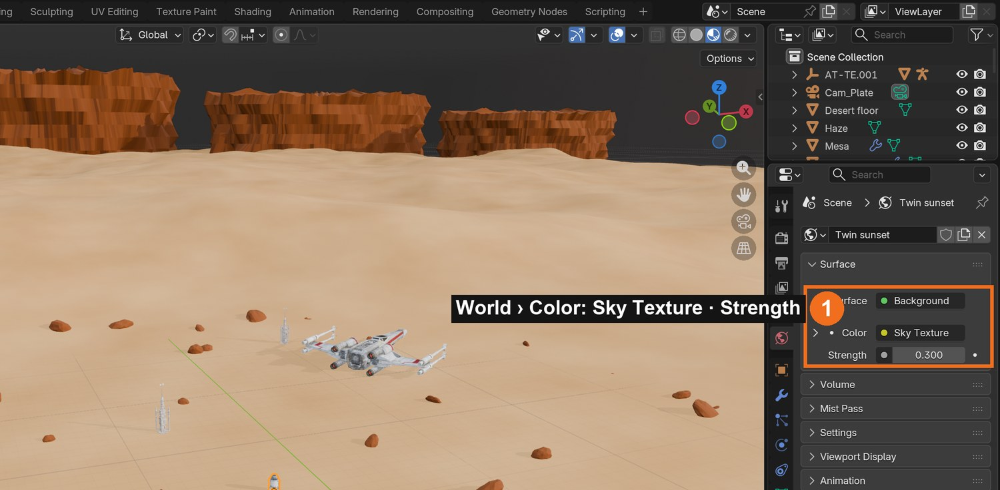
World properties (globe icon): Color set to Sky Texture, with its Strength. Open the Sky Texture to set the sun’s elevation and rotation.
STEP CHECKLIST
GLOSSARY
Horizon line: Where ground meets sky; it sets the camera height feeling
Set dressing: Objects that make a place feel real
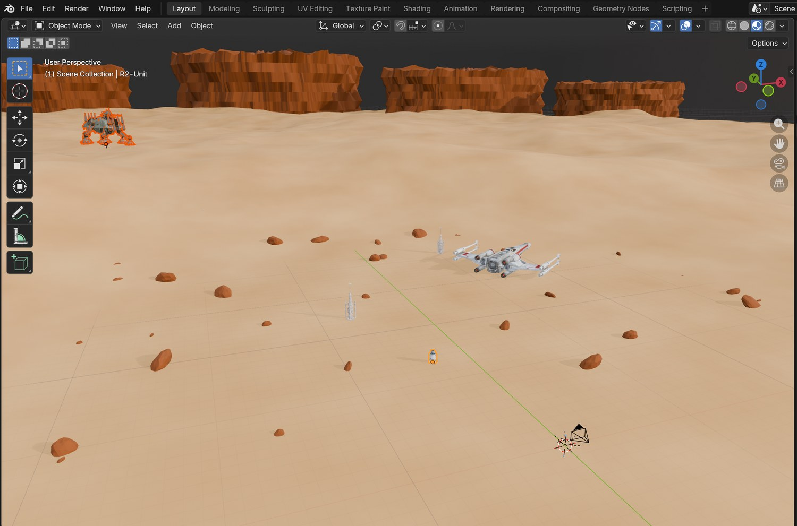
Real screenshot: the demo world in the 3D Viewport. A flat walking area near the camera, dunes and mesas beyond.
WHYThe person will stand on Z = 0, so that area must be flat. Everything beyond it is set dressing that gives depth.
CHECKA world with a flat standing area, terrain beyond, a sky and a sun that agree with your storyboard.
FIXSky black? World strength is 0. Shadows point the wrong way? Rotate the Sun to match the sky’s sun rotation.
WORKED EXAMPLE · DIFFERENT OBJECTThe demo ground is flat within 32 m of the walking area and rises into dunes over the next 55 m.
STRETCH (AFTER THE CHECK PASSES)Add a second sun or moon and give it a different colour.
Method basis: A1. Values and sequence are authored for this project.
04
Kitbash your props at real-world scale
IN SHORTImport; scale to real size; place big then small; clear the standing area; WORLD collection.
READ ALOUD
DOCUMENT: Licensed models (Sketchfab, Poly Haven, Video Copilot, your own) SELECT: Imported and appended models TOOLS / ROUTE: File › Import · File › Append · N sidebar › Dimensions
Import or append your models. Keep each download’s licence text.
Scale every model to its real size using Dimensions in the N sidebar: a person is about 1.7 m, a door 2 m, a small ship 12 m.
Place big shapes first, on thirds of your storyboard frame, then small props near where the person will be.
Leave the standing area clear.
Name objects and put them in a collection called WORLD.
Click by click (real Blender screenshots)
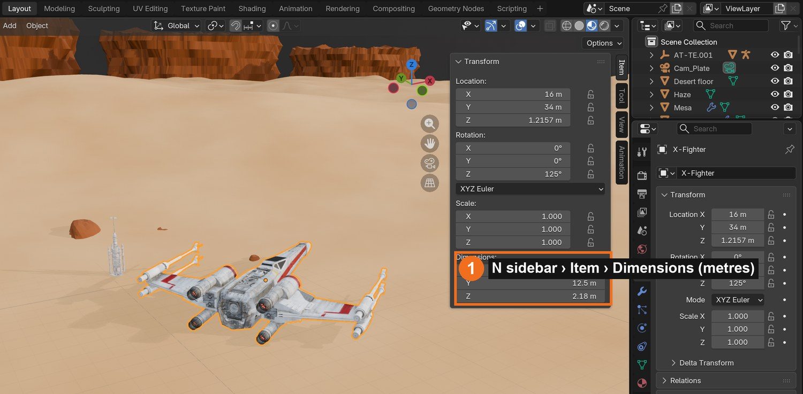
Select a model and press N: the Item tab shows its Dimensions in metres. This fighter is 12.5 m long.
STEP CHECKLIST
GLOSSARY
Scale: How big something is compared with real life
Licence: The rules for using someone else’s model
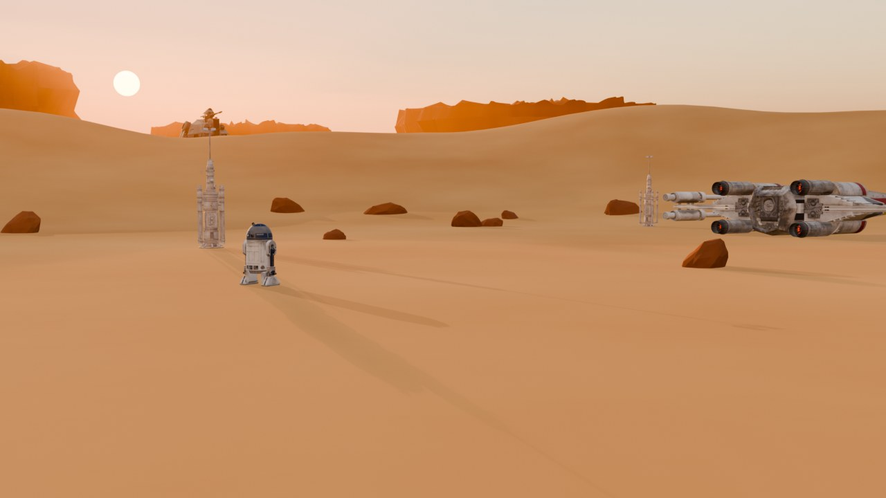
Real render of the demo world: props sized in metres, placed on thirds, with the walking area left clear.
WHYA filmed person is a fixed size. If your props are the wrong scale, the person will look like a giant or a toy.
CHECKModels at believable real sizes, a clear standing area, everything in a WORLD collection, licences saved.
FIXModel huge or tiny? Check Dimensions, then S to scale. Pink model? Its textures are missing: keep the texture folder beside the file.
WORKED EXAMPLE · DIFFERENT OBJECTDemo sizes: fighter 12.5 m, vaporator 3.6 m, astromech 1.1 m.
STRETCH (AFTER THE CHECK PASSES)Add an animated extra from Mixamo standing far away.
Method basis: V1 · A1. Values and sequence are authored for this project.
Session C · Lesson 3 · mm12-26-s08-d03
Light it. Plan the plate.
Finish the world’s mood, then learn what makes footage trackable before you shoot anything.
TODAYLight and atmosphere (35 min), plan and get the practice plate (30 min).
05
Light the world and add atmosphere
Recall first (from last lesson, no peeking):
Why build the world in real metres?
What is the biggest prop in your world, and where does it sit in the frame?
What does Append do?
Say or write your answers, then check them against your file.
IN SHORTSun angle; haze volume; AgX and exposure; eye-height camera; compare with storyboard.
READ ALOUD
DOCUMENT: World_YourName.blend SELECT: Sun, sky, haze, a test camera TOOLS / ROUTE: Sun strength and angle · Volume (Principled Volume) · AgX look · F12
Raise the sun a little above the horizon if the ground looks flat: low suns light the sky, not the ground.
Add haze: a huge cube with a Principled Volume material at very low density (about 0.0007), tinted warm.
Render properties › Color Management: AgX, High Contrast look; adjust Exposure.
Add a camera at eye height (about 1.5 m). Render a test still.
Compare with your storyboard. Fix the biggest difference.
Click by click (real Blender screenshots)
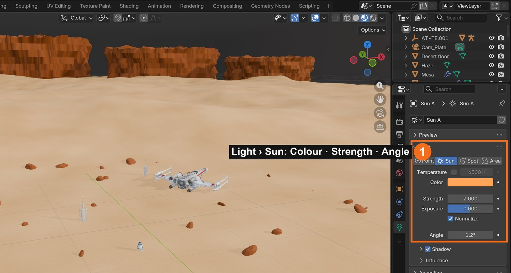
Select the Sun, then Object Data properties (light icon): Colour, Strength and Angle. Rotate the Sun object to change its direction.
STEP CHECKLIST
GLOSSARY
Atmospheric perspective: Distant things look paler and less contrasty
Exposure: Overall brightness of the image
WHYAtmosphere gives depth: far things get paler. Shadows tell the eye where the ground is, which is what will hold your actor down.
CHECKA rendered still with clear shadows, depth from haze, and the mood of your storyboard.
FIXWashed out? Lower Exposure or the sky strength. No shadows? Raise the sun’s elevation and strength.
WORKED EXAMPLE · DIFFERENT OBJECTThe demo cheats the suns up to 7° and 10.5° so they light the sand and cast long shadows.
STRETCH (AFTER THE CHECK PASSES)Add a few bright practical lights (windows, engines) for the eye to find.
Method basis: A1. Values and sequence are authored for this project.
06
Plan the plate and download the practice footage
IN SHORTDownload the plate; study the markers; compare with the failed desk plate; write shoot rules.
READ ALOUD
DOCUMENT: Hollywood Camera Work downloads page SELECT: The “Walking Sitting” green-screen plate TOOLS / ROUTE: Download · unzip · look closely
From Hollywood Camera Work’s downloads page (link in Sources), download the Walking Sitting plate and unzip it into your project folder. Read its read-me: you may use and post your results, with credit.
Scrub through the frames. Notice the camera moves, and the screen has small triangles stuck to the walls and the floor.
Those triangles are tracking markers. Because they are at different depths, Blender can work out how the camera moved.
Look at the failed desk plate below. Write two reasons it could not be tracked.
Write your own shoot rules for lesson 7 from what you noticed.
What went wrong when we built the demo: our first tracking test used the desk clip above. Blender tracked the dots but the solve was unusable. Markers on one flat surface cannot tell the solver the lens or the distance.
Tracking marker: A high-contrast point the software can follow
Parallax: Near things appear to move more than far things when the camera moves
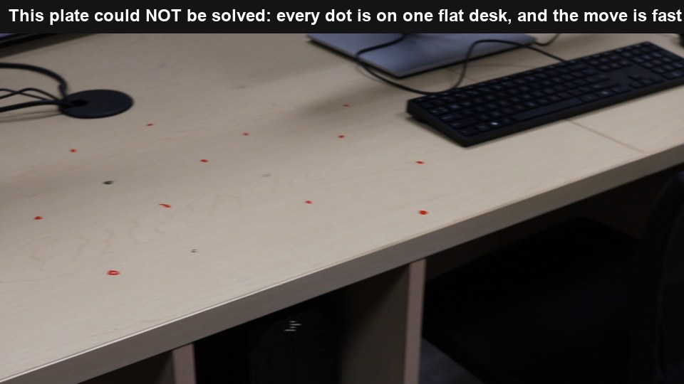
A plate from our own classroom that Blender could not solve: all the red dots are on one flat desk and the handheld move is fast.
WHYTracking needs parallax: points at different depths moving differently. A flat set of dots, motion blur or a spinning camera gives the solver nothing to work with.
CHECKThe plate unzipped in your project, and written shoot rules: markers at different depths, slow move, feet visible, sharp frames.
FIXDownload blocked at school? Ask your teacher for the class copy.
WORKED EXAMPLE · DIFFERENT OBJECTThe practice plate: 314 frames, 1280 × 1080 with pixel aspect 1.5 (plays as 1920 × 1080).
STRETCH (AFTER THE CHECK PASSES)Watch Ian Hubert’s room-transformation tracking video and list his shooting tips.
Method basis: H1 · I2. Values and sequence are authored for this project.
Session D · Lesson 4 · mm12-26-s08-d04
Track the camera.
Teach Blender how the real camera moved, so your virtual camera can copy it exactly.
TODAYMarkers and tracking (35 min), solve and clean (30 min).
07
Load the plate and track the markers
Recall first (from last lesson, no peeking):
Where is your main light, and what colour is it?
Why plan the green-screen plate after lighting the world, not before?
What is haze doing in your shot?
Say or write your answers, then check them against your file.
IN SHORTMotion Tracking workspace; open plate; pixel aspect 1.5; settings; Ctrl+click markers; track both ways.
READ ALOUD
DOCUMENT: Shot_YourName.blend · the plate SELECT: Movie Clip Editor, Tracking mode TOOLS / ROUTE: + workspace › VFX › Motion Tracking · Open · Set Scene Frames · Ctrl+click marker · Ctrl+T track
New file Shot_YourName.blend. Add the Motion Tracking workspace (+ › VFX › Motion Tracking). Open the first plate image; Blender loads the sequence. Click Set Scene Frames and Prefetch.
Sidebar › Track › Camera: set Pixel Aspect to 1.5 for this plate. Leave Sensor Width at 35 and Focal Length about 30 as a starting guess.
Tracking Settings: Pattern Size about 41, Search Size about 121, Motion Model Location, Prepass on, Normalize on. Turn off G so tracks use the R and B channels.
Ctrl+click a marker onto a triangle. Add at least 12, spread over the walls and the floor. Select all (A) and press Ctrl+T to track forward.
Go to the last frame, add markers on triangles that came into view, and press Shift+Ctrl+T to track backward. Never put markers on the actor.
What went wrong when we built the demo: automatic Detect Features grabbed the actor and patches of plain green, giving an 18-pixel error. Hand-placed markers on the triangles, tracked in the red channel, gave 0.81.
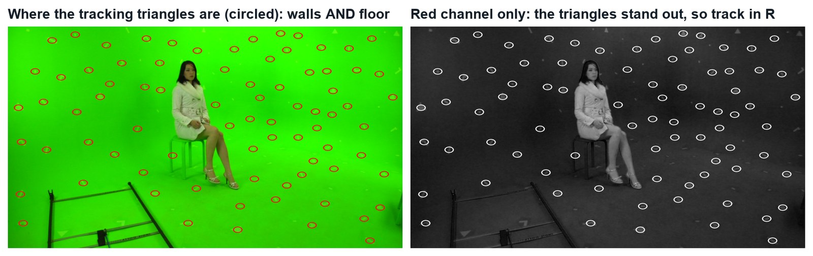
Left: every triangle is a possible marker. Right: the red channel, where the triangles stand out from the green.
Click by click (real Blender screenshots)
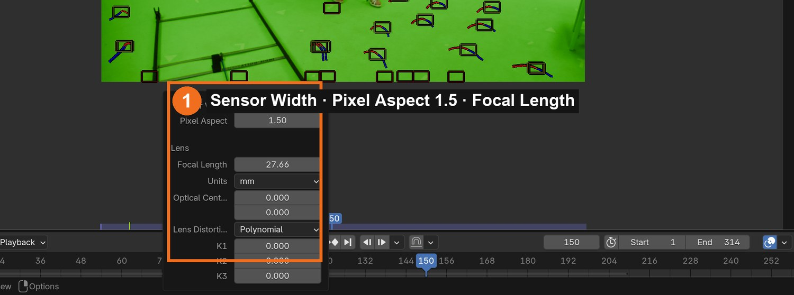
Sidebar › Track › Camera and Lens: Sensor Width, Pixel Aspect (1.5 for this plate) and Focal Length.
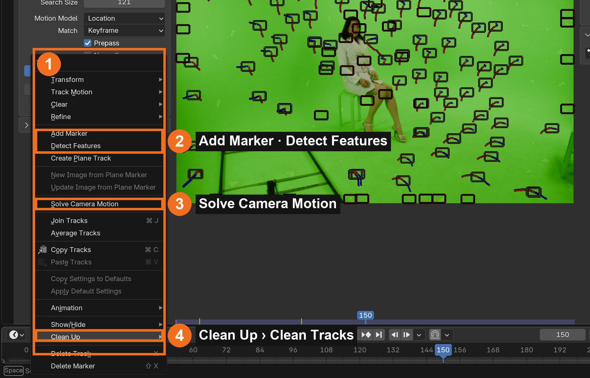
The Track menu (1): Add Marker and Detect Features (2), Solve Camera Motion (3), Clean Up (4).
STEP CHECKLIST
GLOSSARY
Pattern: The small image patch a marker follows
Search area: How far Blender looks for the pattern in the next frame
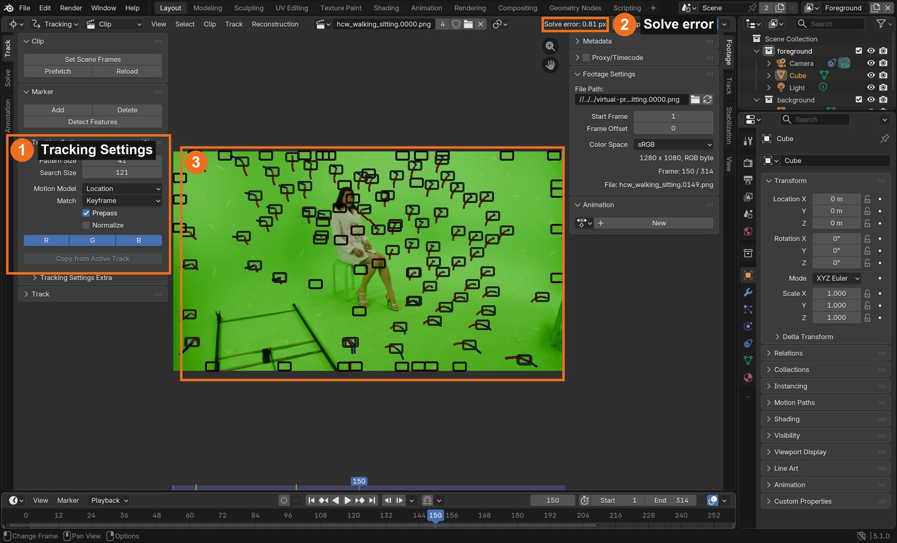
Real screenshot of the demo: tracking settings (1), the solve error readout (2) and 117 tracked markers on the plate (3).
WHYEach marker follows one real point through the shot. Markers spread across walls and floor give the solver points at many depths.
CHECKAt least 12 long tracks spread over walls and floor, none on the actor.
FIXTracks jump or stop? Enlarge Search Size, or re-place the marker and track again. Marker won’t stick on a pale triangle? Turn off the G channel and turn Normalize on.
WORKED EXAMPLE · DIFFERENT OBJECTThe demo used 117 tracks. You need far fewer: 12 good ones beat 100 bad ones.
STRETCH (AFTER THE CHECK PASSES)Add a few markers with Track › Detect Features and compare their quality with your hand-placed ones.
Method basis: B1 · B2. Values and sequence are authored for this project.
08
Solve the camera and get the error under 1 pixel
IN SHORTKeyframes A/B far apart; solve; clean worst tracks; re-solve; refine focal; under 1 px.
READ ALOUD
DOCUMENT: Shot_YourName.blend SELECT: Solve tab TOOLS / ROUTE: Solve › Keyframe A / B · Refine Focal Length · Solve Camera Motion · Clean Up › Clean Tracks
Toolbar › Solve: turn off automatic Keyframe selection and set Keyframe A and B to two frames far apart where the camera has clearly moved (the demo used 20 and 100).
Click Solve Camera Motion. Read the Solve error at the top of the editor.
If it is above 1 px: Clean Up › Clean Tracks with Error about 3, delete the selected tracks, and solve again. Repeat with a lower Error.
Tick Refine › Focal Length and solve once more. The lens should settle near a sensible value (the demo: 27.7 mm).
Aim for under 1.0 px with at least 8 tracks on both keyframes.
STEP CHECKLIST
GLOSSARY
Solve: Calculating the camera’s position for every frame
Solve error: Average tracking error in pixels; lower is better
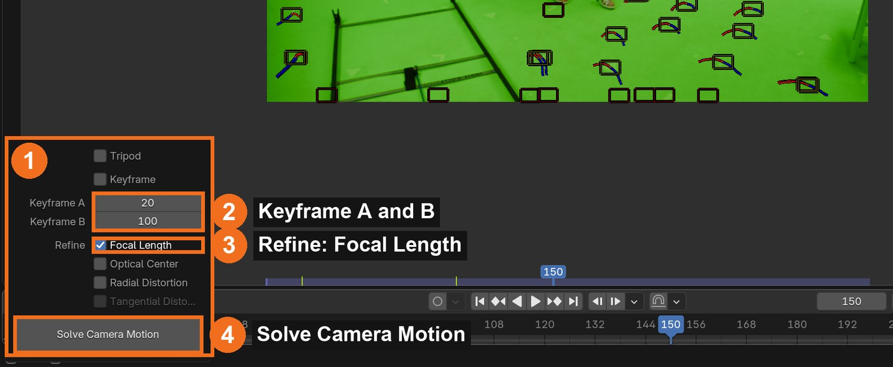
Real screenshot of the Solve panel: keyframes A and B (2), Refine Focal Length (3), Solve Camera Motion (4).
WHYThe solve error is the average distance, in pixels, between where markers are and where the solved camera says they should be. Under 1 px, CG objects stay locked to the footage.
CHECKA solve error under 1.0 px, a believable focal length, and markers still spread across the frame.
FIXError stays high? A few bad tracks cause most of it: delete the worst and re-solve. Focal length runs away to a huge number? Your markers are too flat: add markers at other depths.
WORKED EXAMPLE · DIFFERENT OBJECTThe demo went 1.55 → 1.18 → 0.96 → 0.81 px as the worst tracks were removed and the focal length refined.
STRETCH (AFTER THE CHECK PASSES)Open the Graph view in the Clip Editor and find the tracks that spike.
Method basis: B3. Values and sequence are authored for this project.
Session E · Lesson 5 · mm12-26-s08-d05
Orient the scene. Key the green.
Tell Blender where the floor is and how big a metre is, then remove the green screen.
TODAYFloor, origin and scale (30 min), keying (35 min).
09
Set the floor, origin and scale, then set up the scene
Recall first (from last lesson, no peeking):
What is parallax?
What makes a good tracking marker?
What solve error is good enough?
Say or write your answers, then check them against your file.
IN SHORTThree floor markers › Floor; origin; scale; Setup Tracking Scene; test with a cube.
READ ALOUD
DOCUMENT: Shot_YourName.blend SELECT: Three floor markers; two markers a known distance apart TOOLS / ROUTE: Solve › Orientation: Floor · Set Origin · Set Scale · Scene Setup › Setup Tracking Scene
Select three markers that are on the floor and click Floor. The solved scene tilts so the floor is flat.
Select one floor marker near where the actor sits and click Set Origin.
Set the scale from something you know: the actor is about 1.7 m tall. Select two markers, type the real distance between them, and click Set Scale (or scale the camera later until a 1.7 m cube matches her).
Click Set as Background and Setup Tracking Scene. Blender creates a camera that copies the real one.
Open the Layout workspace and press Spacebar: the test cube should stay stuck to the floor.
Click by click (real Blender screenshots)
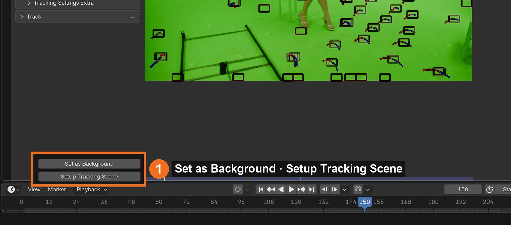
Solve tab › Scene Setup: Set as Background, then Setup Tracking Scene.
STEP CHECKLIST
GLOSSARY
Origin: The point that becomes 0, 0, 0
Camera Solver: The constraint that makes a Blender camera follow the solved motion
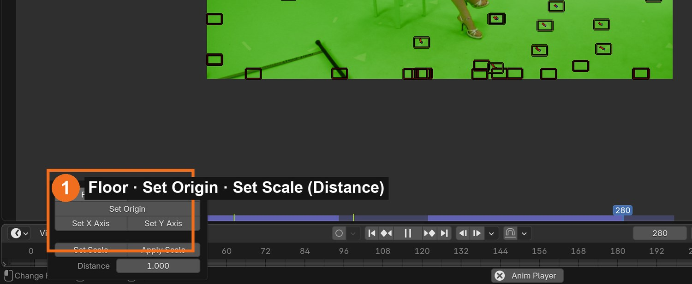
Real screenshot of the Orientation panel: Floor, Set Origin, Set X/Y Axis, and Set Scale with its Distance.
WHYA solve has no idea which way is up or how big anything is. Floor, origin and scale turn it into a real place measured in metres.
CHECKA flat floor at Z = 0, an origin near the actor, a believable scale, and a test cube that sticks to the floor during playback.
FIXCube slides? The solve error is too high: go back and clean tracks. Scene upside down? Pick three floor markers again, wider apart.
WORKED EXAMPLE · DIFFERENT OBJECTThe demo camera worked out at about 1.4 m high and travelled 2.1 m during the shot.
STRETCH (AFTER THE CHECK PASSES)Add a second test object far away and check it also sticks.
Method basis: B3 · B6. Values and sequence are authored for this project.
10
Key the green screen and clean it with a garbage matte
IN SHORTKeying node; pick the green; Black/White levels on the matte; garbage matte mask; PNG RGBA sequence.
READ ALOUD
DOCUMENT: Shot_YourName.blend · Compositing workspace SELECT: Keying node; a mask TOOLS / ROUTE: Add › Keying › Keying · Key Color eyedropper · Black Level / White Level · Mask › Garbage Matte
Compositing workspace. Add the plate (Image or Movie Clip node) and a Keying node. Connect a Viewer node and turn on Backdrop.
Use the eyedropper on Key Color and click the green near the actor.
Look at the Matte output. Raise Black Level until the screen is pure black; lower White Level until the actor is pure white. Keep her hair edges soft.
Draw a garbage matte: in the Movie Clip or Image Editor’s Mask mode, draw a loose shape around the actor, animate it every 20 frames or so, and plug a Mask node into Garbage Matte (inverted) so rails, stands and the stool disappear.
Output the result as a PNG sequence with RGBA (transparent) into a folder keyed.
Click by click (real Blender screenshots)
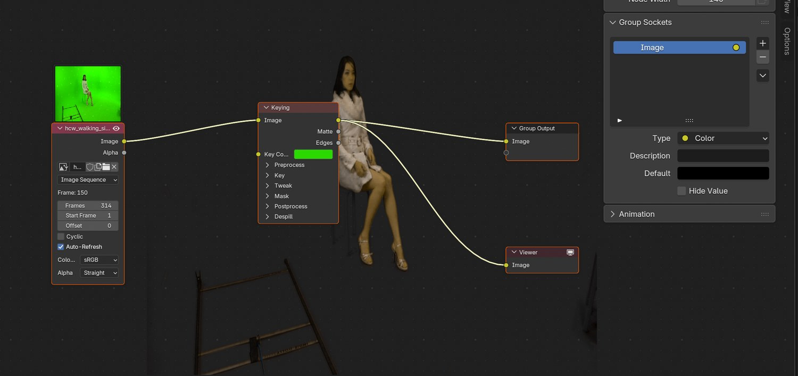
The demo node tree: plate → Keying node → output and Viewer, with the keyed result showing as the backdrop.
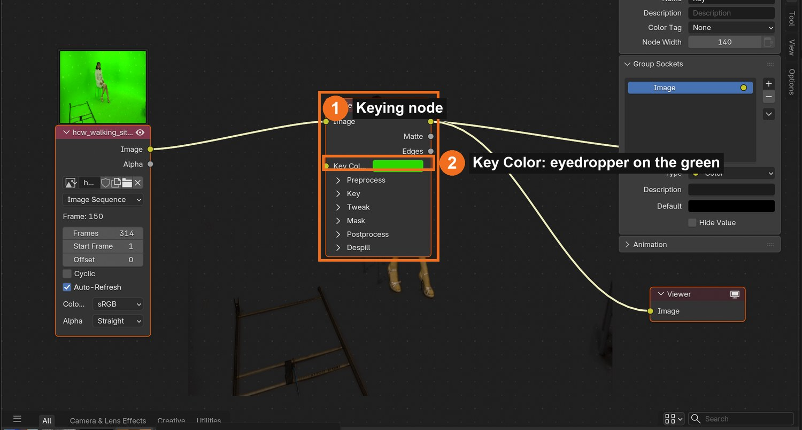
The Keying node (1): click the Key Color swatch, then the eyedropper, and pick the green (2). Black Level, White Level and Despill are in the sections below.
STEP CHECKLIST
GLOSSARY
Key: Removing a colour to make it transparent
Matte: The black-and-white image that defines what is visible
Garbage matte: A rough mask that removes unwanted areas
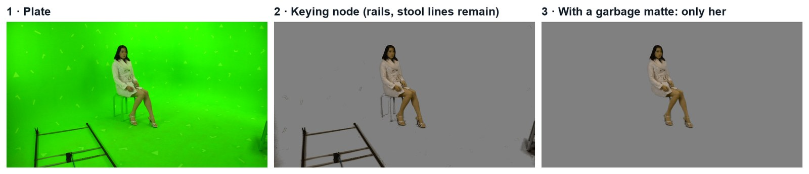
Real frames: the plate, the Keying node result (rails and stool lines remain), and the result with a garbage matte.
WHYA keyer makes pixels transparent by colour. It cannot know that a light stand is unwanted, so a hand-drawn garbage matte removes everything that is not the actor.
CHECKA clean RGBA sequence of the actor only, with soft hair edges and no green fringe.
FIXDark smudges remain? The screen is unevenly lit: raise Black Level. Edges look chewed? Lower Black Level a little and use Despill for the green fringe instead.
WORKED EXAMPLE · DIFFERENT OBJECTDemo settings: Key Color sampled from the wall, Black Level 0.45, White Level 0.8, Despill 1.0.
STRETCH (AFTER THE CHECK PASSES)Add a second, tighter “core” matte to keep the inside of the actor fully solid.
Method basis: B4 · B5. Values and sequence are authored for this project.
Session F · Lesson 6 · mm12-26-s08-d06
Put her in your world.
Bring your world into the tracked shot, place the keyed footage, and keep the feet on the ground.
TODAYWorld + footage card + grounding (40 min), contact and light match (25 min).
11
Bring in your world and ground the footage
Recall first (from last lesson, no peeking):
Which three things does Orientation set?
In a matte, what do white, black and grey mean?
What is a garbage matte for?
Say or write your answers, then check them against your file.
IN SHORTAppend WORLD and fit it to the tracked floor; image plane from the keyed sequence; Foot track; Grounded add-on.
Delete the test cube and ground. File › Append your WORLD collection from World_YourName.blend. Parent it to an Empty and move, rotate or scale the Empty until the world’s flat area sits on the tracked floor.
Add › Image › Mesh Plane: choose the first keyed PNG, tick Animate Image Sequences, and use Emission (shadeless) with alpha.
In the Clip Editor add a new tracking Object called Actor and track one marker named Foot on the front of the foot that touches the floor.
Install the Grounded Footage add-on (Edit › Preferences › Add-ons › Install from Disk, file in the brief). In the 3D Viewport sidebar open the Grounded tab.
Choose the clip, the Foot track, the tracked camera, the footage plane and the floor, then click Ground the footage. Play it: her feet stay on the ground as the camera moves.
Click by click (real Blender screenshots)
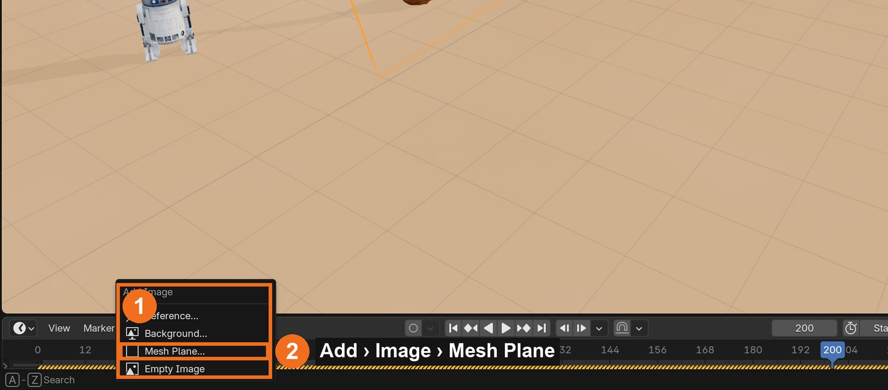
In the 3D Viewport: Add (Shift+A) › Image › Mesh Plane (2). Choose the first keyed PNG and tick Animate Image Sequences.
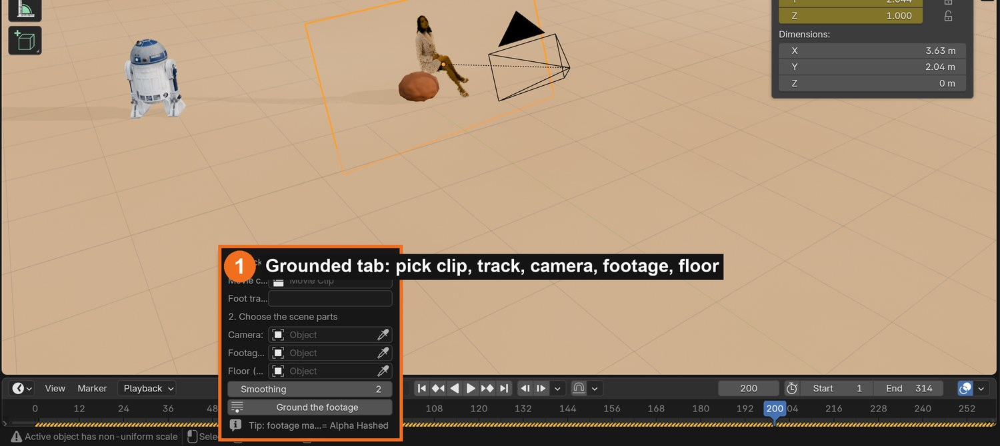
The Grounded tab: choose the clip and Foot track, the camera, the footage plane and the floor, then Ground the footage.
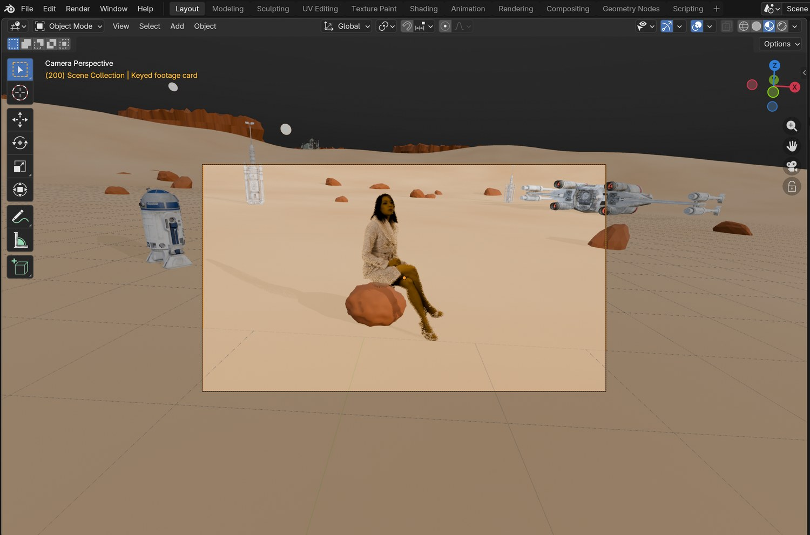
Through the tracked camera: the footage card fills the frame, and the world is behind it.
STEP CHECKLIST
GLOSSARY
Image plane: A flat mesh showing footage
Contact point: Where the actor touches the ground
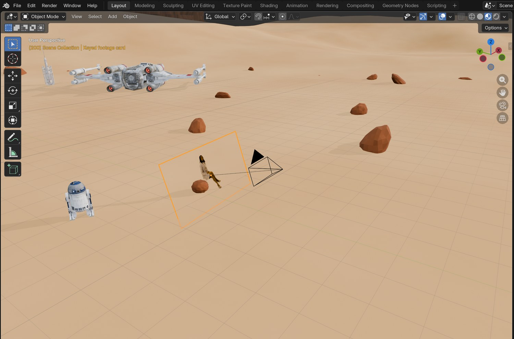
Real screenshot of the demo scene from outside: the tracked camera, the footage card it looks through, the seat rock and the world.
WHYThe footage is a flat card. The add-on moves that card to the depth where her foot meets the floor on every frame, so she keeps her true size and never floats.
CHECKYour world filmed by the tracked camera, with the keyed actor standing on your ground through the whole shot.
FIXShe floats or sinks? The Foot marker is not on the contact point, or the floor is not at Z = 0. She is a giant? Fix the scene scale in step 9.
WORKED EXAMPLE · DIFFERENT OBJECTIn the demo the card sits between 2.6 m and 4.9 m from the camera as she walks and sits.
STRETCH (AFTER THE CHECK PASSES)Try the shot with the card left at one fixed depth and see the feet slide.
Method basis: I1 · B6. Values and sequence are authored for this project.
12
Add contact, shadow and a light and colour match
IN SHORTSeat object where the stool was; transparent shadows; shadow direction; brightness and colour match; three test frames.
READ ALOUD
DOCUMENT: Shot_YourName.blend SELECT: A seat object, the footage material, the sun TOOLS / ROUTE: Material › Transparent Shadows · Mix (Multiply) tint · Emission Strength
The green stool was keyed out, so she sits on nothing. Put an object from your world (a rock, a crate) exactly where the stool stood, just behind the footage card.
In the footage material’s settings turn on Transparent Shadows so the card casts a shadow shaped like her, not a rectangle.
Check her shadow falls the same way as your props’ shadows. If not, rotate your sun (or flip your world).
Match brightness and colour: adjust Emission Strength, and multiply a little of your light’s colour into the footage.
Render three frames from across the shot and compare them side by side.
Click by click (real Blender screenshots)
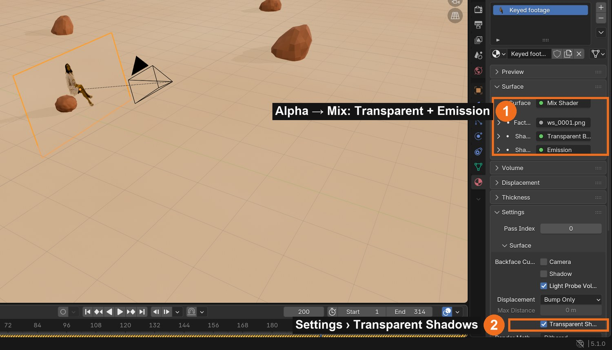
Material properties for the footage card: the image’s Alpha drives a Mix of Transparent and Emission (1); in Settings turn on Transparent Shadows (2).
STEP CHECKLIST
GLOSSARY
Contact shadow: The dark area where an object meets a surface
Light wrap: Background light spilling softly over the subject’s edges
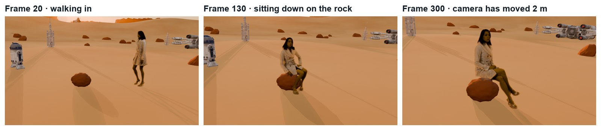
Real renders across the demo shot: walking in, sitting on a rock placed where the stool was, and after the camera has moved 2 m.
WHYViewers believe a composite when things touch: feet on ground, body on seat, shadow on sand, and one consistent light colour.
CHECKA seat or contact object in the right place, a person-shaped shadow in the right direction, and matched brightness and colour.
FIXSeat covers her legs? Move it further from the camera, behind the card. Shadow is a rectangle? Turn on Transparent Shadows.
WORKED EXAMPLE · DIFFERENT OBJECTThe demo found the stool’s position from one plate frame and put a rock 0.38 m high there.
STRETCH (AFTER THE CHECK PASSES)Add a soft rim of light on her sun side.
Method basis: D2 · I1. Values and sequence are authored for this project.
Session G · Lesson 7 · mm12-26-s08-d07
Shoot yourself.
Now it is your turn in front of the green screen, shot to match the world you built.
TODAYShoot (40 min), key and track your plate (25 min).
13
Shoot your own green-screen plate
Recall first (from last lesson, no peeking):
Why does the keyed footage sit on a flat plane at the person’s distance?
How do you check that feet meet the ground?
What gives a composite away fastest?
Say or write your answers, then check them against your file.
IN SHORTLight screen, then subject; 2 m from the screen; feet in frame; markers at depths or lock the tripod; two takes.
READ ALOUD
DOCUMENT: Classroom green screen, LED lights, camera or phone SELECT: Your plate TOOLS / ROUTE: Your shoot rules from step 6
Light the screen evenly first. Then light yourself separately, from the direction of your world’s sun.
Stand at least 2 m from the screen to avoid green spill. Keep your feet in frame.
For a moving camera: tape markers on the screen and on stands or boxes at different depths, and move slowly. For a first shot, a locked-off tripod is fine and needs no tracking.
Record 10 seconds of action that fits your story sentence. Do two takes.
Copy the files into your project folder straight away and name them.
STEP CHECKLIST
GLOSSARY
Spill: Green light bouncing from the screen onto the subject
Locked-off: A camera that does not move
WHYMost compositing problems are created on set. Even screen light, separation from the screen and matched light direction are worth more than any software fix.
CHECKTwo takes, feet visible, evenly lit screen, light direction matching your world, files safely copied.
FIXShadows on the screen? Move further from it. Green on your skin? Step forward and add a backlight.
WORKED EXAMPLE · DIFFERENT OBJECTOur teacher’s own test clip was shot locked-off, which is why it needed no camera track.
STRETCH (AFTER THE CHECK PASSES)Shoot a third take walking towards and away from the camera.
Method basis: I1 · D2. Values and sequence are authored for this project.
14
Key your plate (and track it if the camera moved)
IN SHORTKey; static camera or track and solve; export RGBA; notes for next time.
READ ALOUD
DOCUMENT: Shot2_YourName.blend SELECT: Your plate TOOLS / ROUTE: Steps 7–10 again, on your footage
Key your best take with the Keying node and a garbage matte, exactly as in step 10.
Locked-off camera? Skip tracking: add a camera at your real camera’s height and angle.
Moving camera? Track and solve it as in steps 7–9. Under 1 px.
Export a keyed RGBA sequence.
Note what you would change next time you shoot.
STEP CHECKLIST
GLOSSARY
Take: One recorded attempt at a shot
WHYDoing the process a second time, on footage you shot, is where it becomes your skill instead of a recipe.
CHECKA clean keyed sequence of yourself, and either a solved camera under 1 px or a matched static camera.
FIXCan’t get a clean key? Check the Matte view; uneven screen light needs a higher Black Level and a tighter garbage matte.
WORKED EXAMPLE · DIFFERENT OBJECTA locked-off plate plus a virtual camera at the same height is the fastest route to a finished shot.
STRETCH (AFTER THE CHECK PASSES)Key the second take too and choose the better one.
Method basis: B4 · B3. Values and sequence are authored for this project.
Session H · Lesson 8 · mm12-26-s08-d08
You, in your world.
Place yourself, fix the walk-away problem, and polish.
TODAYGround yourself (35 min), extras and polish (30 min).
15
Put yourself in the world and fix the walk-away problem
Recall first (from last lesson, no peeking):
What did you change about the lighting when you shot your own plate?
Why keep the camera move slow and the markers visible?
Whose permission did you need?
Say or write your answers, then check them against your file.
IN SHORTAppend world; image plane; Foot track; Ground the footage; shadows; match.
READ ALOUD
DOCUMENT: Shot2_YourName.blend SELECT: Your keyed sequence, a Foot track TOOLS / ROUTE: Grounded Footage add-on
Append your WORLD, add your keyed sequence as an image plane, and set the camera.
Track a Foot marker on the foot that touches the floor. When you swap feet, move the marker to the other foot.
Run Ground the footage. Scrub: as you walk away you should get smaller and stay on the ground.
Turn on Transparent Shadows and check your shadow matches the props’.
Match brightness and colour to the world.
STEP CHECKLIST
GLOSSARY
Walk-away problem: Footage on a fixed card floats and shrinks wrongly when the actor changes distance
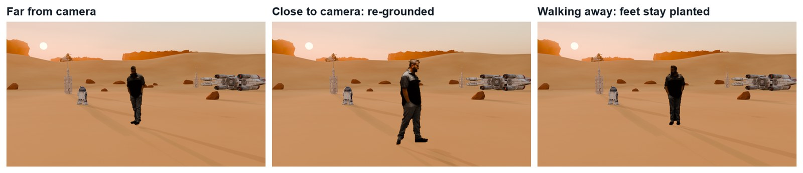
Real renders: our teacher’s clip grounded in the demo world. Far, near and walking away, his feet stay on the sand and his shadow matches.
WHYOn a fixed card, a person walking away only slides up the frame and seems to float. Moving the card to the foot’s depth each frame gives true size and contact. This is the fix Ian Hubert describes.
CHECKYourself in your world, grounded through the whole clip, with a matching shadow.
FIXFeet slide when you change foot? Re-place the Foot marker at each step. Jittery depth? Raise Smoothing in the add-on.
WORKED EXAMPLE · DIFFERENT OBJECTIn the teacher’s clip the card moves between 5.8 m and 8.8 m from the camera over 898 frames.
STRETCH (AFTER THE CHECK PASSES)Add footprints or dust where your feet land.
Method basis: I1. Values and sequence are authored for this project.
16
Add life: extras, atmosphere and a final grade
IN SHORTOne moving extra; dust or haze; Glare and Color Balance; motion blur; test render.
Add one moving thing in the distance: a Mixamo character, a vehicle, or a blinking light.
Add air: a few dust particles or drifting haze between you and the far props.
In the Compositor add a subtle Glare for bright lights and a Color Balance to tie you and the world together.
Check motion: turn on motion blur if your camera moves fast.
Render a 50 % test of the whole shot and list three fixes.
STEP CHECKLIST
GLOSSARY
Grade: The final colour treatment of a shot
Extra: A background character
WHYStill worlds look like paintings. One moving extra and some air make the place feel alive, and a shared grade makes everything belong.
CHECKA moving extra, visible atmosphere, a subtle shared grade, and a test render with three listed fixes.
FIXExtra steals attention? Make it smaller, further or slower. Grade too strong? Halve it.
WORKED EXAMPLE · DIFFERENT OBJECTThe demo world has a walker on a far dune and an astromech near the path.
STRETCH (AFTER THE CHECK PASSES)Add a sound effect for the extra.
Method basis: D1. Values and sequence are authored for this project.
Session I · Lesson 9 · mm12-26-s08-d09
The client changes the brief.
The client has seen your test. They want a change. You decide how to deliver it.
TODAYIndependent changed brief (65 min).
17
Practical check: the client’s change
Recall first (from last lesson, no peeking):
How did your own plate differ from the practice plate when you tracked it?
Which match was hardest: scale, light or colour?
What is still giving your shot away?
Say or write your answers, then check them against your file.
IN SHORTRead the card; pick the stage; change a copy; render; explain.
READ ALOUD
DOCUMENT: Your shot · the client’s card SELECT: Whatever the card requires TOOLS / ROUTE: Your own decisions
Read your client card (below).
Plan which stage must change: World, Plate or Integrate. Change as little as possible.
Make the changes in a copy of your file.
Render three frames and check contact, shadow and colour again.
Write three sentences: what changed, which tools you used and why, and what you would polish next.
Card
The client says
1 · Night
“Same shot, but it is night. I want to see lights in the world.”
2 · New planet
“Keep the person. Change the world to ice (or jungle, or city).”
3 · Company
“They are not alone: something large passes behind them and its shadow crosses the ground.”
4 · Closer
“Move the crashed ship so it is right behind them.”
Independent evidence: the main achievement evidence for the sprint.
STEP CHECKLIST
GLOSSARY
Revision: A requested change to a shot
WHYA shot built in stages can be changed without starting again. Choosing the right stage to change is the professional skill.
CHECKA changed shot that meets the card, three rendered frames, and an explanation naming the stage and tools.
FIXStuck? Decide which stage the card touches first. (Independent step: the Coach can explain tools but not decide your changes.)
WORKED EXAMPLE · DIFFERENT OBJECTWorked example on a different shot: a “make it night” card meant changing only the sky, sun and grade, not the track or key.
STRETCH (AFTER THE CHECK PASSES)Take two cards at once.
Method basis: D1. Values and sequence are authored for this project.
Session J · Lesson 10 · mm12-26-s08-d10
Render and screen.
Render the final shot with sound, screen it, and defend your choices.
TODAYRender (25 min), screening and defence (40 min).
18
Render the final shot and defend it
Recall first (from last lesson, no peeking):
What did the client’s card change?
Which parts of the shot did not need redoing, and why?
What would you polish next?
Say or write your answers, then check them against your file.
IN SHORTOutput settings; render; check; screen; defend; credit.
READ ALOUD
DOCUMENT: Your final shot file SELECT: The finished shot TOOLS / ROUTE: Output › FFmpeg H.264 + AAC · Render › Render Animation
Output: 1920 × 1080, FFmpeg Video, MPEG-4, H.264, audio AAC. Add a sound or music track in the Sequencer if you have one.
Render › Render Animation at 100 %.
Watch the MP4 in a normal player. Check the first and last frames.
Screening: play it for the class. Explain one World choice, one Plate choice and one Integrate choice.
Credit every source in your evidence: plate, models, music.
Click by click (real Blender screenshots)
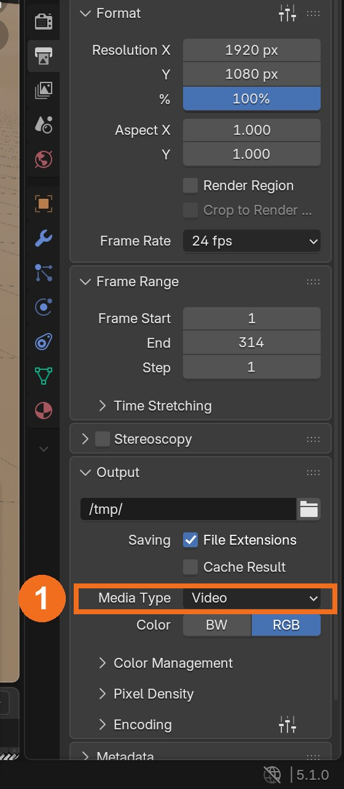
Output properties (printer icon): resolution and frame rate at the top; set Media Type to Video (1), then open Encoding for MPEG-4, H.264 and AAC audio.
STEP CHECKLIST
GLOSSARY
Breakdown: A short explanation of how a VFX shot was made
WHYA shot is finished when an audience has seen it. Explaining your choices with the right words shows you can run the whole process.
CHECKA finished MP4, a defence covering all three stages, and a complete credits list.
FIXRender very slow? Use EEVEE, lower volumetric quality, or render overnight at 100 % after a 50 % check.
WORKED EXAMPLE · DIFFERENT OBJECTThe demo’s 314 frames rendered in EEVEE in a few minutes at half size.
STRETCH (AFTER THE CHECK PASSES)Make a 20-second breakdown video: plate, key, track, world, final.
Method basis: D1. Values and sequence are authored for this project.
Before you submit
Student QA.
Evidence conversation
Keep it short and specific.
SENTENCE FRAMESMy solve error was ___ because ___. · I matched the light by ___. · For the client card I changed the ___ stage using ___.
A1 Sketchfab and Poly Haven: licensed 3D models (check and credit the licence). https://sketchfab.com/
Photo credits
Figures marked Illustration are drawn, not screenshots. Step values are starting points authored for this project. Draft for teacher review; not yet classroom-piloted.